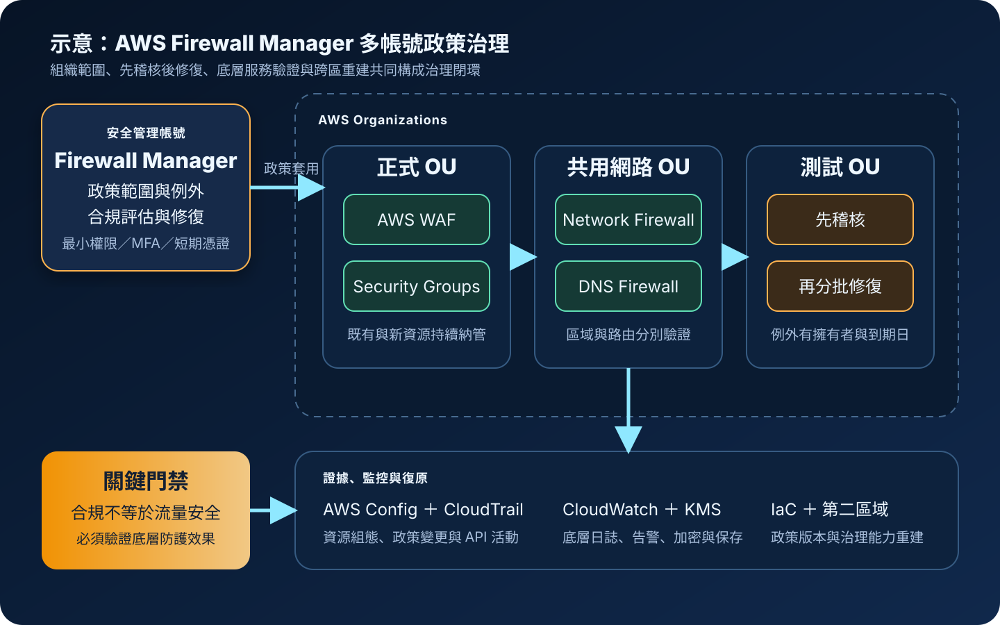

AWS Firewall Manager：多帳號安全政策與合規修復
AWS Firewall Manager 是跨 AWS Organizations 帳號集中配置與稽核防火牆及安全政策的管理服務。它能持續辨識符合範圍的新資源、評估合規狀態並依政策執行修復，但治理成果仍取決於組織結構、範圍條件、底層安全服務設定、變更控制與例外管理。
作者：Dr. William｜查閱與發布：2026-10-27
服務定位
AWS Firewall Manager 用來在多帳號 AWS 組織中集中建立、套用與監督安全政策。安全平台團隊可指定帳號或組織單位、資源類型、區域與標籤範圍，讓政策持續涵蓋既有及後續建立的適用資源，減少逐帳號人工配置造成的漂移。
Firewall Manager 是治理控制面，不是新的封包檢查引擎。實際攔截或保護能力由政策所管理的底層服務提供，例如 AWS WAF、AWS Shield Advanced、VPC 安全群組、AWS Network Firewall、Route 53 Resolver DNS Firewall 或受支援的第三方防火牆。若只有單一帳號與少量資源，直接管理底層服務可能較簡單；若需要跨帳號一致性、持續納管與合規證據，Firewall Manager 才能顯著降低治理負擔。
核心概念與服務邊界
組織與政策元件
- AWS Organizations：提供帳號與組織單位邊界；啟用 Firewall Manager 前須完成組織與必要信任設定。
- 管理員帳號：負責建立政策、檢視合規結果與執行集中治理；應與日常工作負載隔離。
- 政策類型：依要治理的底層服務選擇 WAF、Shield Advanced、安全群組、Network Firewall、DNS Firewall 或其他受支援政策。
- 政策範圍：透過帳號、組織單位、資源類型、區域與標籤決定納管對象。
- 納管資源：符合條件的現有資源與後續新資源可持續被評估，不必逐一手動加入。
- 排除條件：可排除特定帳號、組織單位或資源；例外應具理由、擁有者、期限與補償控制。
合規、修復與證據
- 合規評估：Firewall Manager 比較實際資源與政策要求，標示合規或不合規狀態。
- 自動修復：政策可依類型建立或調整必要設定；正式啟用前需評估服務中斷與規則衝突。
- AWS Config：多種 Firewall Manager 能力依賴 AWS Config 記錄資源組態與變更。
- CloudTrail：記錄政策、管理員設定與 API 操作，供變更追蹤與事件調查。
- CloudWatch：監控底層防火牆服務指標、日誌、告警與修復後的流量影響。
- 區域範圍：政策與底層資源常具有區域性；多區域治理須逐區建立、驗證並追蹤覆蓋率。
適合與不適合的使用情境
適合
- 企業以 AWS Organizations 管理多個正式、測試、研發與共用服務帳號，需要一致的防火牆基準。
- 新帳號或新資源持續增加，安全政策必須自動納管並產生可查核的合規狀態。
- 需要集中管理 AWS WAF 規則、Shield Advanced 保護、安全群組基準、Network Firewall 或 DNS Firewall 政策。
- 安全團隊需要把政策設計、例外核准、修復與證據保存從工作負載團隊分離。
- 組織需要依標籤或組織單位分層套用正式、測試、公開服務與內部服務政策。
不適合或不能單獨完成
- 只有單一帳號與少量固定資源，跨帳號治理收益不足以抵銷組織、Config 與政策維運成本。
- 尚未建立穩定的 AWS Organizations、帳號生命週期、標籤規範與區域治理，卻直接啟用自動修復。
- 期待單一 Firewall Manager 政策同時處理身分授權、弱點修補、惡意程式、資料分類與備份。
- 把合規標記視為實際流量已安全，而未檢查底層 WAF、Network Firewall、DNS Firewall 或安全群組的效果。
- 需要每個應用立即自訂大量例外，卻沒有例外期限、補償控制與衝突處理流程。
示意故事案例：多帳號電商平台的統一防護基準
以下為示意案例，不代表特定企業或正式部署。 一家電商公司在 AWS Organizations 內有正式、測試、資料分析與共用網路帳號。各團隊自行維護 WAF、安全群組與 Network Firewall，造成公開應用的受管規則版本不同、管理連接埠來源過寬、部分新 VPC 未納入流量檢查。
安全平台團隊在專用安全管理帳號啟用 Firewall Manager，先以稽核模式建立政策：正式組織單位的公開應用套用共同 WAF 基準，VPC 安全群組政策禁止不受控的管理連接埠，核心網路帳號套用 Network Firewall 政策。資源以組織單位、類型及核准標籤納管，例外必須有工單、擁有者與到期日。
觀察合規結果與誤判後，團隊分階段啟用自動修復。管理操作採 IAM 最小權限、MFA 與短期憑證；應用 credential 由 Secrets Manager 或 Parameter Store 保存。CloudTrail 記錄政策變更，AWS Config 保留組態證據，底層日誌集中至受 KMS 保護的目的地並以 CloudWatch 告警。第二區域保留相同的 IaC、政策版本與驗證程序，避免主區域失效時只剩文件而無法重建。

建置與運作流程
- 整理組織：確認 AWS Organizations 帳號、組織單位、委派管理模式、區域使用清單與帳號生命週期。
- 建立管理邊界：選擇專用 Firewall Manager 管理員帳號，限制登入、API、角色承擔與緊急權限。
- 準備組態記錄：依官方先決條件在必要帳號與區域啟用 AWS Config，驗證資源類型、記錄器與交付狀態。
- 盤點底層服務：列出 WAF、Shield Advanced、安全群組、Network Firewall、DNS Firewall 與第三方防火牆的現況、擁有者及依賴。
- 定義範圍：以組織單位、帳號、資源類型、區域與標籤建立清楚納管條件，避免以模糊命名判斷。
- 設計政策：設定規則、前置與後置規則群組、修復行為、資源清理、例外與刪除後處理。
- 先稽核後修復：先收集不合規清單與影響範圍，在測試組織單位驗證，再分批啟用自動修復。
- 保護管理面：政策與管理角色使用 IAM 最小權限、MFA、短期憑證、職責分離、同儕覆核與變更窗口。
- 管理機密：credential、Access Key、Secret Key、Token、密碼與 cookie 不得寫入政策、標籤、說明或 IaC；應使用 Secrets Manager 或 Parameter Store。
- 集中證據：整合 AWS Config、CloudTrail、CloudWatch、底層服務日誌與工單，依資料分類使用 KMS 並設定保存週期。
- 驗證效果：測試新帳號、新資源、標籤變更、政策衝突、手動漂移、自動修復、例外到期與刪除流程。
- 準備復原：以 IaC 保存管理員設定、政策範本、組織範圍與告警，在第二區域重建並驗證底層服務。
成本、可用性與維運考量
Firewall Manager 的成本取決於政策類型、政策數量、納管帳號或資源，以及底層安全服務。AWS Config 組態記錄、CloudTrail、CloudWatch Logs、S3、KMS、WAF、Shield Advanced、Network Firewall、DNS Firewall 與第三方服務可能分別計費。估算時應把政策管理費、底層資源費、處理流量、日誌量、跨區資料與持續合規記錄一起納入，並以查閱日的官方定價頁與實際組織規模試算。
Firewall Manager 可持續納管新增資源，但不代表所有區域、帳號與服務已自動具備高可用性。政策通常需在使用中的區域分別部署；底層服務仍須依自身方式設計多可用區、容量、路由與故障處理。管理員帳號或單一區域出現問題時，既有底層防護不等於政策變更與修復能力仍完全可用，因此需保留 IaC、政策匯出、緊急操作與跨區重建程序。
維運負擔主要來自範圍錯誤、標籤漂移、政策重疊、修復衝突、例外累積與大量不合規事件。每項政策應有擁有者、目的、適用區域、資源範圍、例外規則、變更紀錄、測試案例與回復方式；政策命名與標籤規範應能讓帳號團隊清楚判斷責任。
Firewall Manager 特有資安風險與控制
- 管理員帳號權限過大：使用專用安全管理帳號，分離組織管理、政策編輯、合規讀取與緊急修復權限。
- 政策範圍誤選：在啟用修復前輸出實際納管清單，逐一核對組織單位、帳號、區域、資源類型與標籤。
- 自動修復造成中斷：先稽核、再測試、後分批修復；保留排除條件、回復程序與變更窗口。
- 新帳號未納管：把帳號建立流程與 Organizations 組織單位配置、Config 啟用及政策驗證自動化。
- 標籤規避政策：限制敏感治理標籤的修改權限，使用 AWS Config 或自動化檢查標籤漂移。
- 政策重疊衝突：建立政策優先關係與責任矩陣，測試前置規則、後置規則、客戶自訂規則與資源擁有者變更。
- 誤信合規狀態：合規只表示符合政策設定；仍須以流量測試、WAF 日誌、Network Firewall 日誌與安全群組連線驗證實際效果。
- 公開存取未收斂：搭配 WAF、CloudFront、負載平衡器、安全群組、路由與公開 IP 盤點，避免政策外入口。
- 網路隔離被簡化：Firewall Manager 可治理部分安全控制，但 VPC、子網路、路由、安全群組、網路 ACL 與 PrivateLink 仍須分層設計。
- 底層日誌缺漏：集中確認 WAF、Network Firewall、DNS Firewall、CloudTrail 與 AWS Config 的交付、權限、保存與告警。
- 證據與日誌外洩：依分類使用 KMS、最小讀取權限、不可變保存與必要遮罩，避免把敏感資料寫入標籤或政策說明。
- 長期憑證管理：人員與自動化優先使用聯合身分、IAM 角色、MFA 與短期憑證，不建立不必要的長期 Access Key。
- 機密進入設定：應用機密由 Secrets Manager 或 Parameter Store 管理，禁止出現在政策 JSON、CloudFormation 參數、標籤或稽核附件。
- 跨區覆蓋不一致：維護區域清單與覆蓋儀表板，在每個啟用區域驗證政策、Config、底層服務與告警。
- 刪除政策殘留資源：事前確認刪除政策時是否清理受管資源，避免留下過度寬鬆或失去擁有者的規則。
共同責任邊界
AWS 負責 Firewall Manager 受管服務、底層基礎設施與服務控制面的安全與可用性。客戶負責 AWS Organizations 結構、管理員帳號、政策類型與範圍、標籤、例外、修復模式、底層 WAF／Shield／安全群組／Network Firewall／DNS Firewall 設定、IAM、AWS Config、CloudTrail、日誌、KMS、驗證、成本與跨區復原。
Firewall Manager 不會替客戶判斷業務允許清單，也不會自動保證應用、作業系統、資料庫與身分安全。IAM 最小權限、MFA、短期憑證、網路隔離、公開存取治理、KMS 加密、Secrets Manager 或 Parameter Store、CloudTrail、CloudWatch、備份與跨區復原仍須分層落實。備份內容應包含 IaC、政策版本、例外清單、組織範圍與調查證據，並定期驗證可在目標 RTO／RPO 內恢復治理能力。
上線與維運可執行檢查清單
- □ 已確認使用 AWS Organizations 的多帳號治理需求，而不是只管理單一帳號。
- □ 已建立專用管理員帳號，且未與一般工作負載混用。
- □ 管理員與自動化權限採 IAM 最小權限、MFA、聯合身分與短期憑證。
- □ 必要帳號與區域的 AWS Config 記錄器、資源類型與交付狀態均正常。
- □ 已列出所有使用區域、帳號、組織單位、資源類型與底層安全服務。
- □ 每項政策的納管與排除條件已輸出成清單並由資源擁有者覆核。
- □ 治理標籤具有命名規範，敏感標籤修改權限已限制並監控。
- □ 自動修復已先在測試組織單位與非正式資源驗證。
- □ WAF、安全群組、Network Firewall、DNS Firewall 與其他政策衝突已有測試案例。
- □ 例外具有業務理由、擁有者、補償控制、核准紀錄與到期日。
- □ 新帳號與新區域啟用流程會自動完成 Config、政策與告警檢查。
- □ 公開應用、公開 IP、負載平衡器、CloudFront 與入口安全群組已盤點。
- □ VPC、子網路、路由、安全群組與網路 ACL 仍採最小必要連線。
- □ CloudTrail、AWS Config 與底層服務日誌已集中保存並監控交付中斷。
- □ 證據與日誌依資料分類使用 KMS，讀取權限與保存週期已核准。
- □ 應用機密使用 Secrets Manager 或 Parameter Store，未寫入政策、標籤或 IaC。
- □ 已以實際請求與封包驗證底層防護效果，而非只查看合規標記。
- □ 已估算 Firewall Manager、AWS Config、日誌、KMS 與底層安全服務成本。
- □ 政策停用、刪除、資源清理與緊急回復行為均已測試。
- □ 第二區域保有 IaC、政策版本、範圍、告警與底層服務重建程序。
- □ 備份與跨區復原演練符合 RTO／RPO，且包含例外與稽核證據。
- □ 正式內容不含 credential、Access Key、Secret Key、Token、密碼或 cookie。
AWS 官方一手來源
- What is AWS Firewall Manager?（查閱：2026-10-27）
- AWS Firewall Manager prerequisites（查閱：2026-10-27）
- AWS Firewall Manager policies（查閱：2026-10-27）
- AWS Firewall Manager policy scope（查閱：2026-10-27）
- Security in AWS Firewall Manager（查閱：2026-10-27）
- Resilience in AWS Firewall Manager（查閱：2026-10-27）
- Logging AWS Firewall Manager API calls with AWS CloudTrail（查閱：2026-10-27）
- AWS Firewall Manager pricing（查閱：2026-10-27）
- AWS Shared Responsibility Model（查閱：2026-10-27）
內容說明
本文依查閱日可用的 AWS 官方文件整理，作為基礎學習與架構討論材料；實際部署仍須依最新區域支援、政策類型、Organizations 與 AWS Config 先決條件、底層服務功能、配額、定價、資料分類、法規、例外治理與故障演練結果調整。